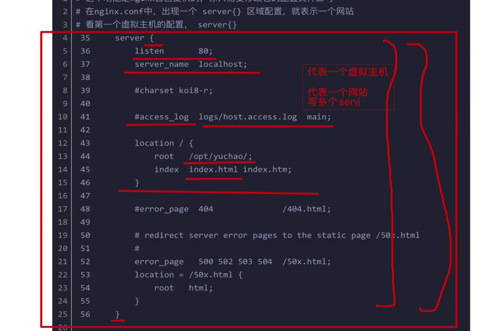
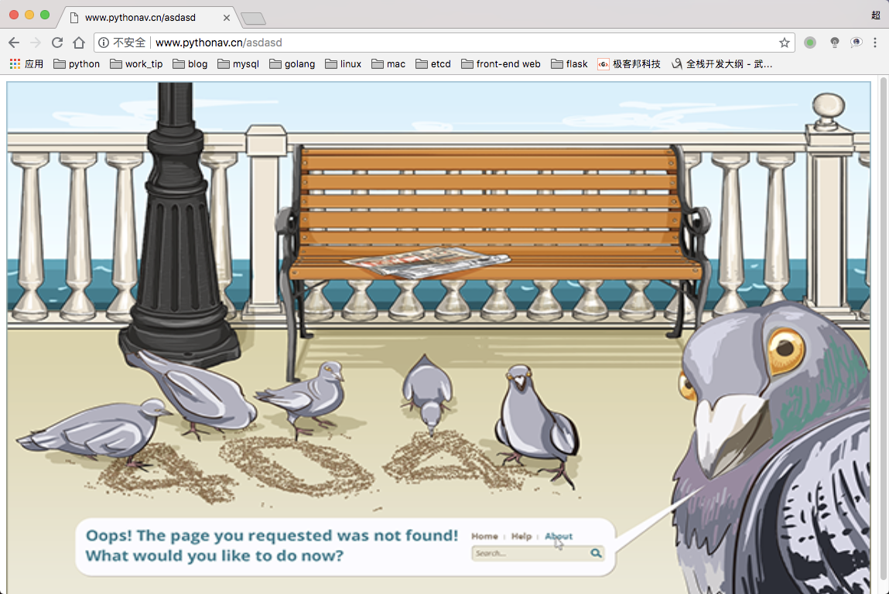
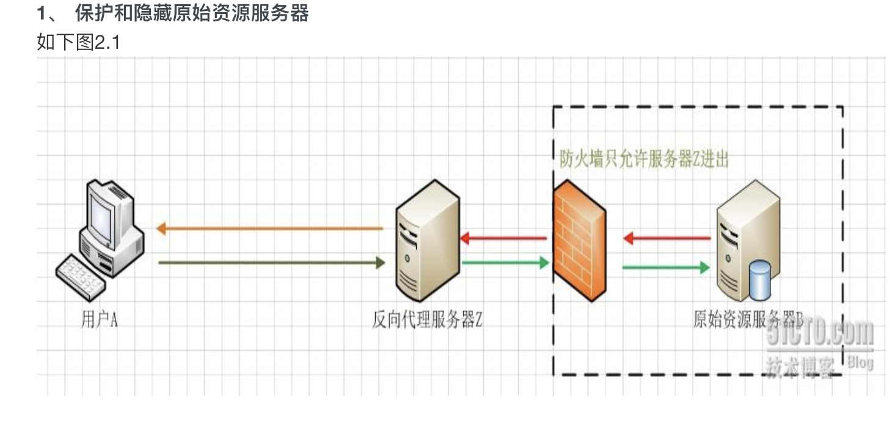

Nginx是什么
nginx是一个开源的，支持高性能，高并发的www服务和代理服务软件。它是一个俄罗斯人lgor sysoev开发的，作者将源代码开源出来供全球使用。
nginx比它大哥apache性能改进许多，nginx占用的系统资源更少，支持更高的并发连接，有更高的访问效率。
nginx不但是一个优秀的web服务软件，还可以作为反向代理，负载均衡，以及缓存服务使用。
安装更为简单，方便，灵活。
nginx可以说是非常nb了
面试回答nginx技巧
- 支持高并发，能支持几万并发连接
- 资源消耗少，在3万并发连接下开启10个nginx线程消耗的内存不到200M
- 可以做http反向代理和负载均衡
- 支持异步网络i/o事件模型epol
安装环境
1. gcc 安装
安装 nginx 需要先将官网下载的源码进行编译，编译依赖 gcc 环境，如果没有 gcc 环境，则需要安装
yum install gcc-c++
2. PCRE pcre-devel 安装
PCRE(Perl Compatible Regular Expressions) 是一个Perl库，包括 perl 兼容的正则表达式库。
nginx 的 http 模块使用 pcre 来解析正则表达式，所以需要在 linux 上安装 pcre 库，pcre-devel 是使用 pcre 开发的一个二次开发库。nginx也需要此库。命令：
yum install -y pcre pcre-devel
3. zlib 安装
zlib 库提供了很多种压缩和解压缩的方式， nginx 使用 zlib 对 http 包的内容进行 gzip ，所以需要在 Centos 上安装 zlib 库。
yum install -y zlib zlib-devel
4. OpenSSL 安装
OpenSSL 是一个强大的安全套接字层密码库，囊括主要的密码算法、常用的密钥和证书封装管理功能及 SSL 协议，并提供丰富的应用程序供测试或其它目的使用。
nginx 不仅支持 http 协议，还支持 https（即在ssl协议上传输http），所以需要在 Centos 安装 OpenSSL 库。
5. 安装环境代码集合
yum install gcc patch libffi-devel python-devel zlib-devel bzip2-devel openssl-devel ncurses-devel sqlite-devel readline-devel tk-devel gdbm-devel db4-devel libpcap-devel xz-devel openssl openssl-devel -y
安装、启动 Nginx
1. 下载源码包
wget -c https://nginx.org/download/nginx-1.12.0.tar.gz
2. 解压缩源码
tar -zxvf nginx-1.12.0.tar.gz
3. 配置，编译安装 开启 Nginx 状态监测功能
编译安装支持开启很多第三方的功能
./configure --prefix=/opt/nginx1-12/ --with-http_ssl_module --with-http_stub_status_module
make && make install
- –prefix 指定将 nginx 装到哪里
- –with-http_ssl_module 使 Nginx 支持 https 协议
- –with-http_stub_status_module 性能统计模块
4. 启动 Nginx，进入 sbin 目录，找到 Nginx 启动命令
cd sbin
./nginx #启动
./nginx -s stop #关闭
./nginx -s reload #重新加载
安装完成后的检测
netstat -tunlp | grep 80curl -I 127.0.0.1
#如果访问不了，检查selinux，iptables
Nginx 实战学习
- 部署一个静态网站
- 基于端口的多虚拟主机
- 访问日志
- 错误日志
- 代理服务
静态网站配置
1 | user root; # ngxin的工作用户，必须和启动用户一致 |
- 修改配置文件后，需要重启 Nginx 程序，才能更新配置
关于Nginx配置文件第一行：user root的问题
1 | (ll_env) [root@VM-4-8-centos blog]# ps -aux | grep nginx |
worker process Nginx 的工作用户没有指定，就是nobody
启动nginx的是root用户，而工作用户是nginx，两个不一致就会导致403错误
我们修改工作用户和启动用户一致
重启 Nginx
先验证配置文件语法是否正确
/opt/nginx1-12/sbin/nginx -t1
2
3
4[root@VM-4-8-centos conf]# /opt/nginx1-12/sbin/nginx -t
nginx: the configuration file /opt/nginx1-12//conf/nginx.conf syntax is ok
nginx: configuration file /opt/nginx1-12//conf/nginx.conf test is successful指定路径，再重启（否则可能会重启其他的 Nginx）
/opt/nginx1-12/sbin/nginx -s reload
基于端口的多虚拟主机
如果每台linux服务器只运行了一个小网站，那么人气低，流量小的草根站长需要承担高额的服务器租赁费，也造成了硬件资源浪费。
虚拟主机就是将一台服务器分割成多个“虚拟服务器”，每个站点使用各自的硬盘空间，由于省资源，省钱，众多网站都使用虚拟主机来部署网站。
也就是指定不同的端口

- 虚拟主机的概念就是在web服务里的一个独立的网站站点，这个站点对应独立的域名（IP），具有独立的程序和资源目录，可以独立的对外提供服务。
- 这个独立的站点配置是在nginx.conf中使用server{}代码块标签来表示一个虚拟主机。
Nginx支持多个server{}标签，即支持多个虚拟主机站点。
虚拟主机的类型
基于域名的虚拟主机
通过不同的域名区分不同的虚拟主机，是企业应用最广的虚拟主机。
基于端口的虚拟主机
通过不同的端口来区分不同的虚拟主机，一般用作企业内部网站，不对外直接提供服务的后台，例如www.pythonav.cn:9000
基于IP的虚拟主机
通过不同的IP区分不同的虚拟主机，此类比较少见，一般业务需要多IP的常见都会在负载均衡中绑定VIP

1 | # 第一个虚拟主机网站 |
访问日志
Nginx 能够记录用户的每一次访问请求
对于该日志的记录，分析，可以更清晰的掌握服务器的动态信息，比如安全性
对于用户行为进行检测，分析
- 能够记录出用户访问的时间、次数、频率
我们需要去掉 http 中的 log_format 和 access_log 的注释，即为两个虚拟主机服务开启日志监控
1 | # 修改nginx的配置如下 |
可以通过以下命令持续检测
tail -f /opt/nginx1-12/logs/access.log
通过该 access.log 日志，即可进行更多的日志分析
http 中对应参数解析
- log_format是日志关键字参数，不能变
- main是日志格式指定的标签，记录日志时通过main标签选择指定的格式。
1 | $remote_addr 记录客户端ip |
日志效果如下
1 | 66.102.6.6 - - [14/Aug/2018:18:46:52 +0800] "GET /favicon.ico HTTP/1.1" 404 571 "-" "Mozilla/5.0 (X11; Linux x86_64) AppleWebKit/537.36 (KHTML, like Gecko) Chrome/49.0.2623.75 Safari/537.36 Google Favicon" "97.64.34.118" |
Nginx 限制网站来源IP访问
如果哪天发现你的nginx很慢，或者检查access.log时候，有一人疯狂请求你的nginx server，那么可以禁止这个IP访问
1 | # 限制 ip 或 ip 段访问 |
Nginx 错误页面优化
在网站运行过程中，可能因为页面不存在等原因，导致网站无法正常响应请求，此时web服务会返回系统的错误码，但是默认的错误页面很不友好。
因此我们可以将404，403等页面的错误信息重定向到网站首页或者其他指定的页面，提升用户访问体验。
1 | server { |
1 | # 40x.html |

Nginx 代理服务
- 当你访问你的个人 linux
正向代理
正向代理，也就是传说中的代理,他的工作原理就像一个跳板（VPN），简单的说：
我是一个用户，我访问不了某网站，但是我能访问一个代理服务器，这个代理服务器呢，他能访问那个我不能访问的网站，于是我先连上代理服务器，告诉他我需要那个无法访问网站的内容，代理服务器去取回来，然后返回给我。
1 | server { |
反向代理
对于客户端而言，代理服务器就像是原始服务器

Nginx 实现负载均衡的组件
1 | ngx_http_proxy_module proxy代理模块，用于把请求抛给服务器节点或者upstream服务器池 |
实现一个简单的反向代理
1 | # 机器准备，两台服务器 |
主负载均衡节点的配置文件
1 | worker_processes 1; |
此时访问master的服务器 192.168.11.63:80 地址，已经会将请求转发给slave的80端口
除了页面效果的展示以外，还可以通过log(access.log)查看代理效果